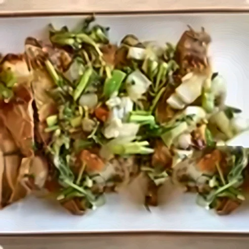
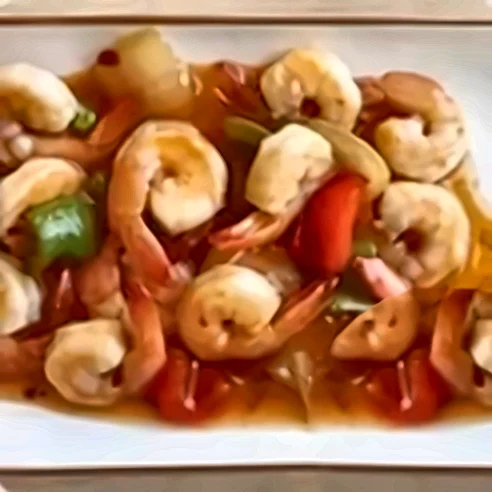

La carte
55 plats et boissons, rangés en 10 catégories. Chaque plat a sa photo, son prix et sa description. Cliquez sur un plat pour l'agrandir.
Choisissez une catégorie
Utilisez les onglets (Menus, Inari, Plats chauds…). Une courte explication présente chaque catégorie.
Ou cherchez un ingrédient
Tapez « crevette », « saumon » ou « poulet » dans la barre de recherche : tous les plats concernés s'affichent.
Commandez sur Deliveroo
Le bouton « Commander » vous emmène sur notre page Deliveroo. Le plat s'y trouve dans la même catégorie.
Aucun plat ne correspond à votre recherche. Essayez un autre mot, par exemple « poulet ».
Les sauces
À ajouter à votre commande. La sauce soja salée est offerte.
Pour bien choisir
Le petit lexique
Vous ne connaissez pas certains noms ? Voici ce qui se cache derrière chaque spécialité.
Inari
Un petit sachet de tofu frit, légèrement sucré, rempli de riz vinaigré et garni sur le dessus.

Roll / maki
Riz et garniture roulés dans une feuille d'algue, puis coupés en tranches.

California
Un roll « à l'envers » : le riz est à l'extérieur, la feuille d'algue à l'intérieur.
Sushi (nigiri)
Une boulette de riz vinaigré surmontée d'une tranche de poisson cru, ici du saumon.

Tempura
Une friture japonaise très légère et croustillante, ici autour de crevettes.
Gyoza
Des raviolis japonais en forme de demi-lune, grillés d'un côté et tendres de l'autre.
Nem
Un rouleau frit et croustillant, farci de viande ou de crevettes et de vermicelles.
Rouleau de printemps
Une galette de riz fraîche, non frite, garnie de crudités, de vermicelles, de poulet et de crevettes.
Bobun
Un plat complet vietnamien : vermicelles de riz, crudités, nem et bœuf sauté, servi tiède.

Wok
La grande poêle asiatique : on y saute les plats très vite à feu vif, pour garder le croquant.
Wakamé
Une algue marinée au sésame, servie froide en salade, fraîche et légèrement iodée.
Perles de coco
Un dessert de riz gluant, moelleux, roulé dans la noix de coco râpée.

Les pastilles
Comprendre les repères
- Halal : plat préparé avec une viande halal. Tous nos hors-d'œuvre et plats chauds le sont.
- Végétarien : sans viande ni poisson.
- Épicé : relevé au piment, pour ceux qui aiment.
- Fruits de mer : contient des crevettes ou du poisson.
- 1 acheté = 1 offert : offre en cours sur Deliveroo.
Allergies ou question sur un ingrédient ? Appelez-nous au 09 63 45 01 12 avant de commander.
Votre choix est fait ?
Retrouvez tous ces plats sur notre page Deliveroo.